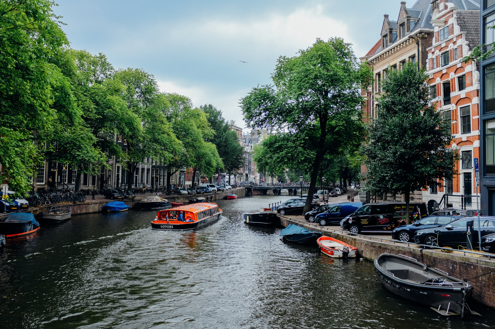
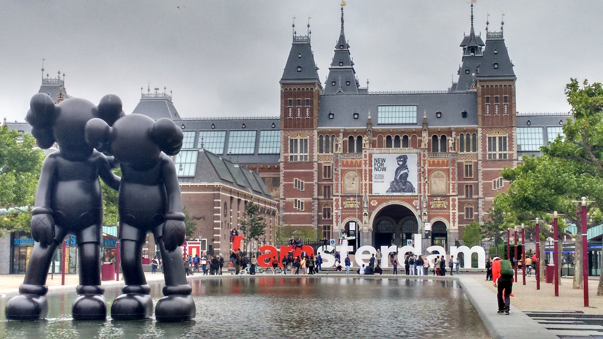
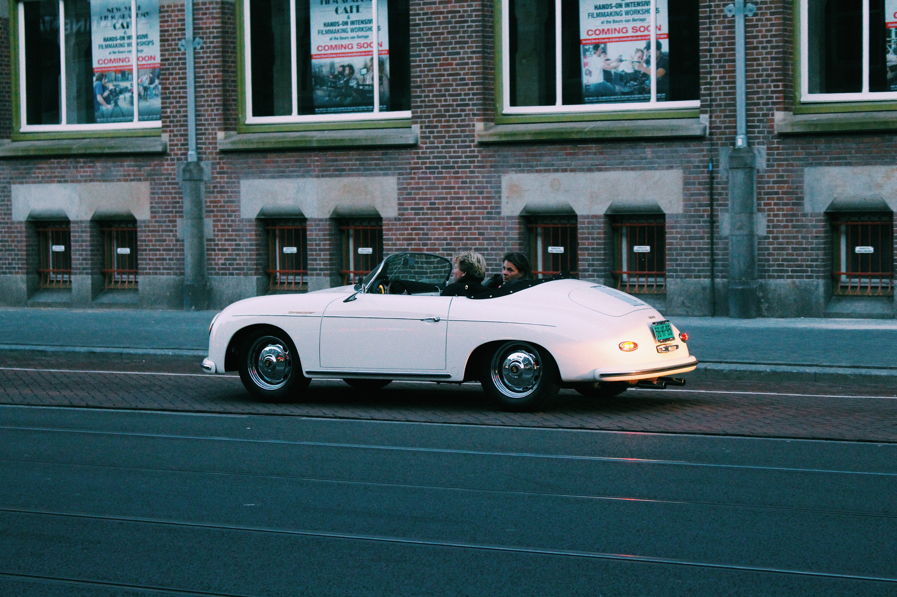
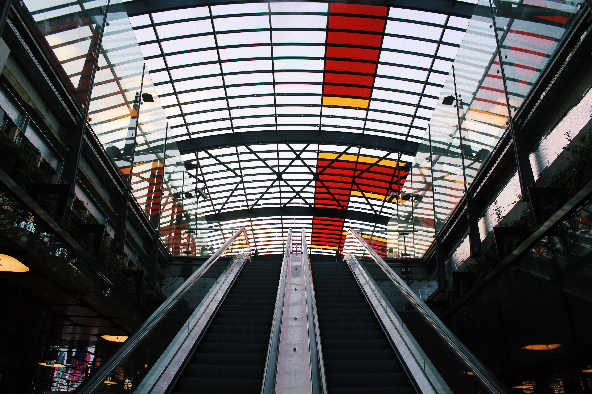

Een sociaal-duurzaam Amsterdam Voor veel mensen is en blijft Amsterdam
een zeer aantrekkelijke plek om te wonen en dus blijven we bouwen aan de
groei van de stad.
Maar Amsterdam bestaat natuurlijk uit méér dan alleen woningen. Daarom
bouwen we aan een sociaal-duurzaam Amsterdam: een stad die het welzijn
van haar bewoners belangrijk vindt en verbetert, door niet alleen
woningen te bouwen maar ook te zorgen voor maatschappelijke
voorzieningen, voor huidige bewoners en toekomstige generaties.

Organisatie

De BMV van de Gemeente Amsterdam is de spil van gemeenschapsdiensten. Wij streven ernaar een inclusieve omgeving te bieden, met diensten variërend van onderwijs tot zorg en cultuur. Samen bouwen we aan een welvarende en verbonden gemeenschap.
Projecten

Ontdek de innovatieve projecten van de BMV Gemeente Amsterdam. Van duurzaamheid tot sociale betrokkenheid, onze projecten zijn gericht op het verbeteren van het dagelijks leven in de stad. Samen werken we aan een betere toekomst voor alle inwoners.
Werken bij

Maak deel uit van de BMV Gemeente Amsterdam en draag bij aan het vormgeven van onze gemeenschap. Ontdek boeiende carrièremogelijkheden in een inclusieve omgeving. Samen creëren we een betere plek om te wonen en te werken.